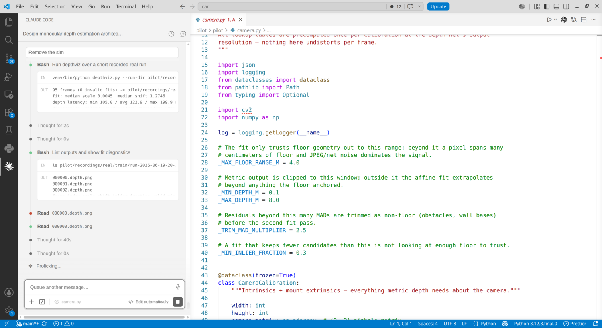
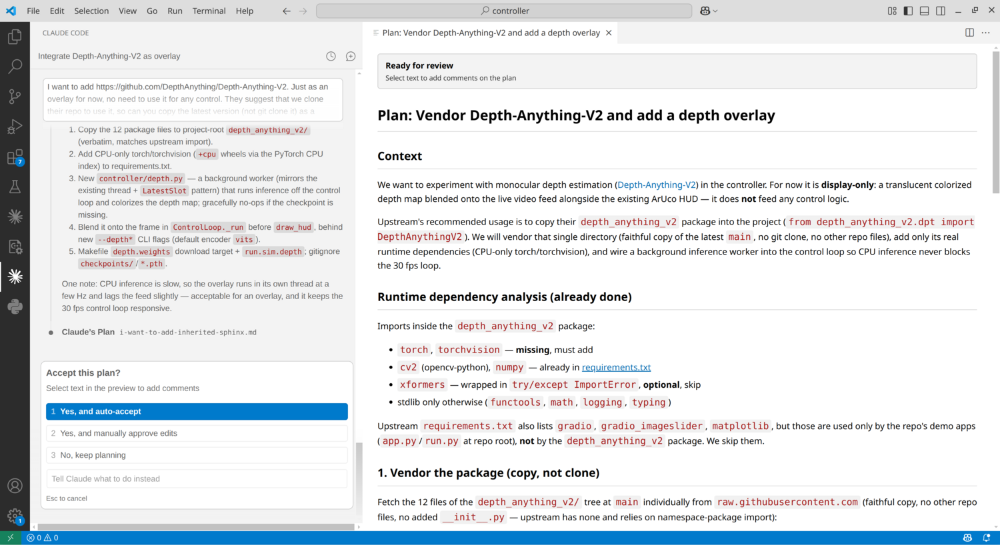

My AI Coding Workflow
July 2026
A few weeks ago, I was invited to a workshop on software development where I shared how I use coding agents in my day-to-day work. This post is an adapted version of that presentation.
My workflow is actually very simple. If you've watched a few YouTube videos about AI-assisted coding, you might find it a bit boring. But it works well for me, and I use it to ship code to production.
My current setup is Claude Code inside VS Code:

Claude Code is on the left-hand side. On the right-hand side, I can look at the code, diffs, and the plan window:

The plan window is where I spend a lot of my time. I usually iterate on the plan before letting the agent make any changes.
My workflow
My typical workflow starts with a request in the initial prompt. I describe what I want to build, change, or investigate, and then the agent asks questions and comes up with a plan.
I usually spend a lot of time refining the plan. Like, a lot.
How much I iterate on it depends on the change: for some tasks, I can quickly validate the approach, while for others I spend a lot of time making sure the direction is right.
Once I'm satisfied with the plan, I usually select "Yes, and auto-accept", which lets the agent execute the planned changes without stopping for approval at every individual step.
Then I review the changes. The same applies here: the amount of review depends on what part of the system is being changed. Sometimes I'll go through every detail and ask for changes as small as changing a class name or function name, for instance. Other times, for lower-risk changes, I can just look at the diff and move on.
And sometimes, during the review, I realize that the approach was not the right one. In those cases, I might ask it to change everything it just did and start from a different direction.
How my workflow changed
The overall way I work with agents has stayed surprisingly similar over the last two years. I still review the approach, let the agent make changes, and review the result. I'm still very much part of the loop. The agent doesn't go from a prompt to production on its own.
What changed is how much I delegate.
In 2024, I barely trusted the model to write accurate code. I was writing most of the code myself and using the agent for smaller tasks. For example, I would give it the signature of a function and ask it to implement it, or provide very strict requirements for a specific change. I was still closely involved in every step, reviewing changes line by line and giving feedback after each iteration.
Today, the loop is still the same, but the size of the tasks I delegate is much larger. I spend more time upfront refining the plan and less time directing individual edits.
Some observations
GUI > TUI
I've tried using agents in a terminal user interface (TUI), including Claude Code's terminal-based interface. Even though I've been a heavy Linux and terminal user for two decades, I don't enjoy using TUIs for coding.
For this type of workflow, I prefer a graphical user interface (GUI). I find it easier to look at plans, provide feedback, and review code when I have everything visible in an integrated development environment (IDE).
Context matters
I also rely a lot on persistent context, like instructions and skills. It helps keep things consistent and avoids having to repeat the same things over and over.
For example, I have preferences about coding style. In Python, the model would often use the os module in places where I prefer using pathlib, which I find cleaner and easier to reason about. So I keep this kind of preference in an AGENTS.md file.
I also use skills for recurring tasks. When I have a workflow that I need to repeat from time to time, I capture it in a skill so I don't have to explain the same process every time.
For example, I have a skill for investigating production issues. Combined with read-only access to some APIs, the skill knows what information to collect and how to help me debug a problem.
More autonomy
One thing that is still a bit annoying is that I often have to manually approve commands before the agent can run them.
I've allowed a few commands to run without approval, but there is still some friction. I've been slowly working on running agents in a sandbox or VM so they can operate in a more autonomous way while keeping the review process.
Like this article? Get notified of new ones: